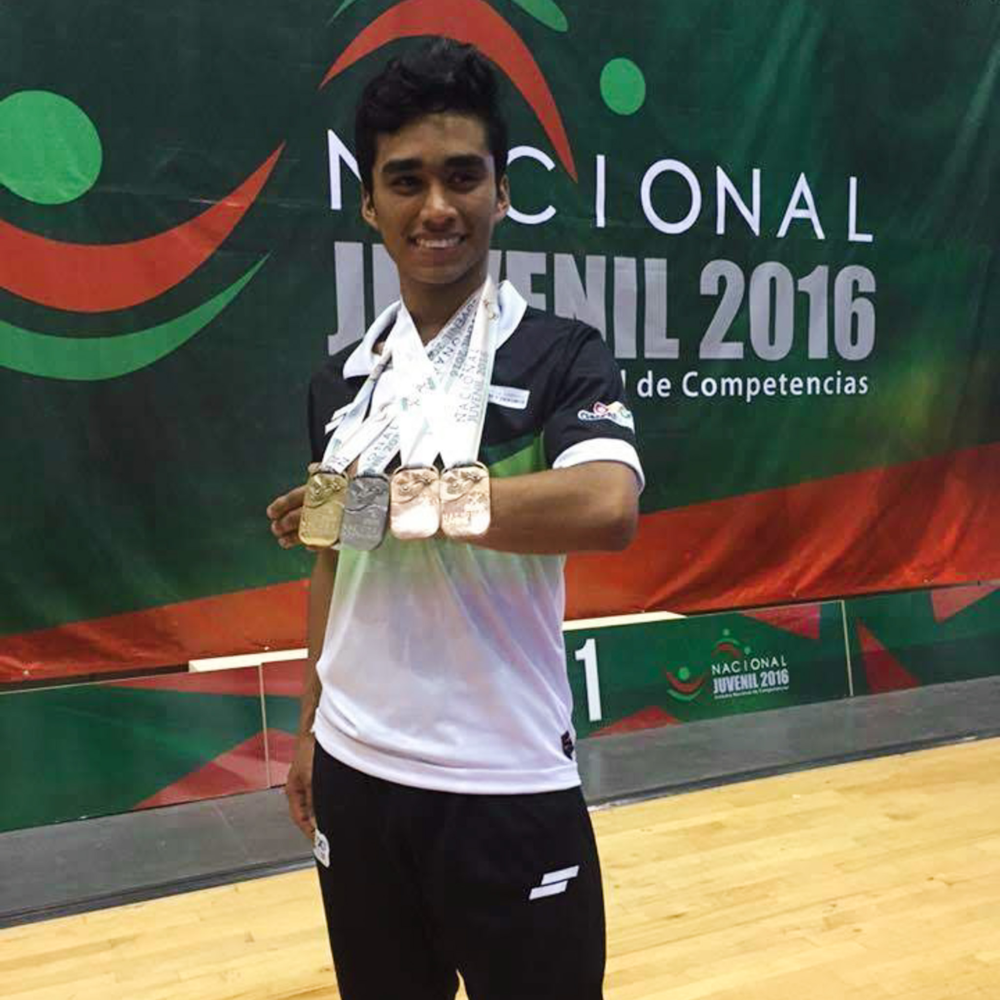

El camino del taekwondo es más que una disciplina; es un viaje de autodescubrimiento, perseverancia y superación. Desde que comencé mi entrenamiento, supe que el taekwondo no solo moldearía mi cuerpo, sino también mi espíritu. Con más de 16 años de dedicación, he tenido el honor de representar a mi país en diversas competencias internacionales, obteniendo el tri campeonato panamericano, 4 veces campeon nacional, multimedallista internacional, como entrenador formando a campeones mundiales. Cada una de estas experiencias me ha enseñado que el verdadero desafío no está en vencer a otros, sino en superarse a uno mismo. Además de ser atleta, soy un apasionado entrenador. Mi objetivo es compartir mi conocimiento y guiar a la próxima generación de taekwondoínes, ayudándolos a alcanzar su máximo potencial. Mi enfoque no solo se centra en las técnicas físicas, sino también en inculcar los valores fundamentales del taekwondo: respeto, integridad, perseverancia y autocontrol. El taekwondo me ha llevado a lugares que nunca imaginé y me ha permitido conectar con personas increíbles de todo el mundo. Hoy, sigo comprometido con este arte marcial, buscando siempre mejorar y compartir mi pasión con quienes desean aprender.
Para más información, contáctame a través de los siguientes medios: